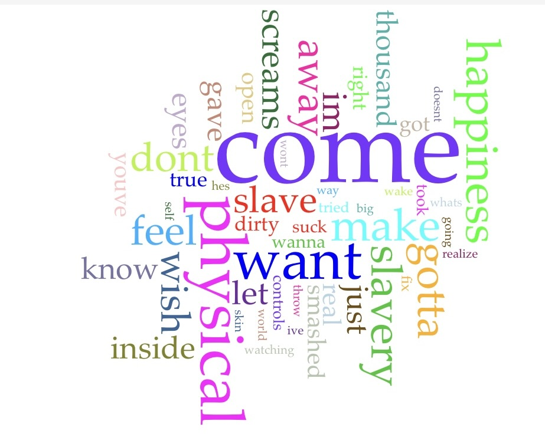
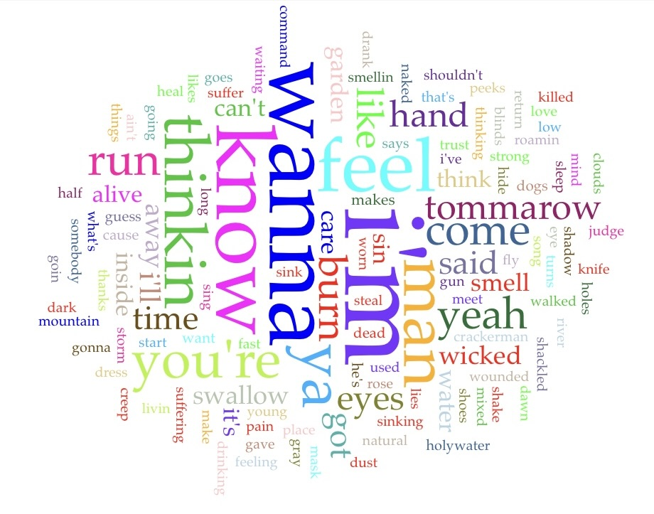

For this assignment I decided to compare the lyrics from the discography of my some of my favorite artists. The first txt file is the complete discography to Nine Inch Nail's "Broken" album, the second txt file is Stone Temple Pilot's "Core" album. My goal of this assignment is to analyze the lyrical differences between the two and compare how the two relate to one another.

Immediately I can notice the mention of slavery and control as some of the most frequently used words; this makes me think there is a theme of a lack of power in ones' situation.

The word "wanna" jumps out at me as the most commonly used word. Wanna what? The next highest used word is know, making me think the creator is asking to know something.
These changes will be updated to my personal repo on : Github